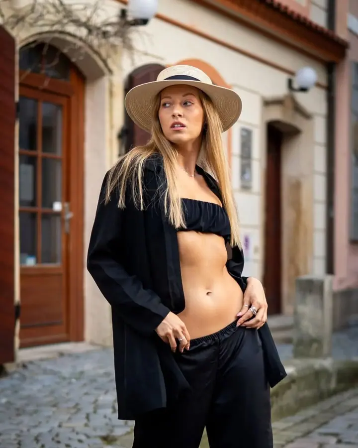
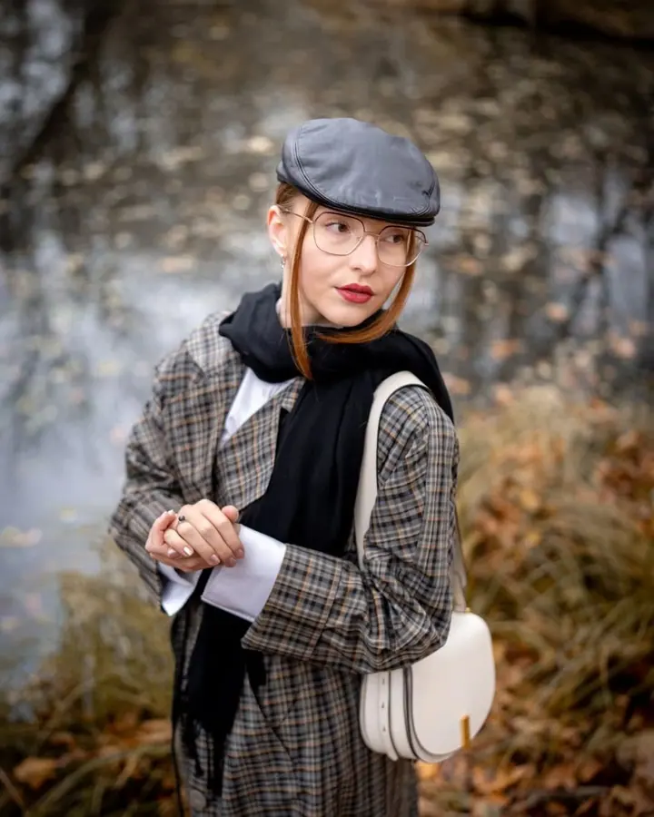
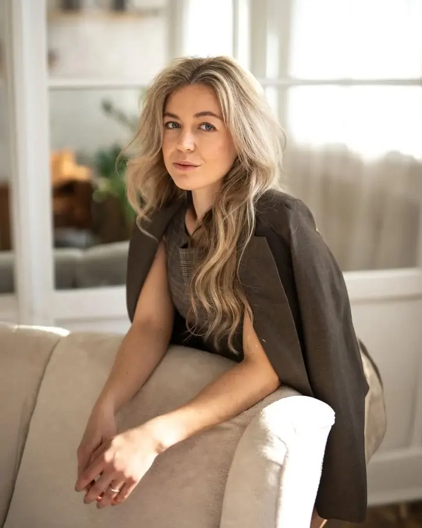
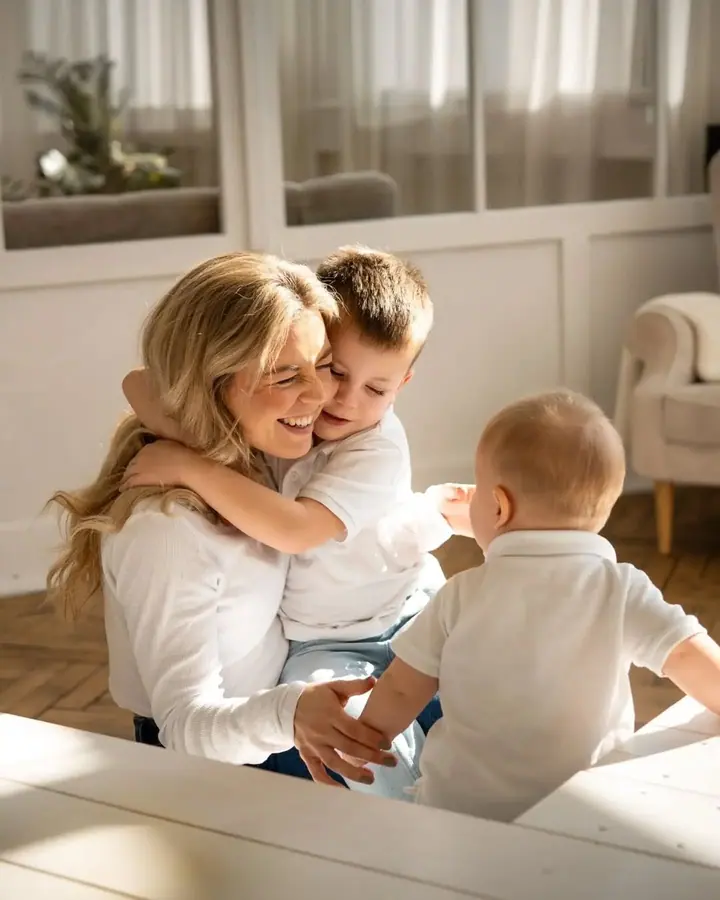
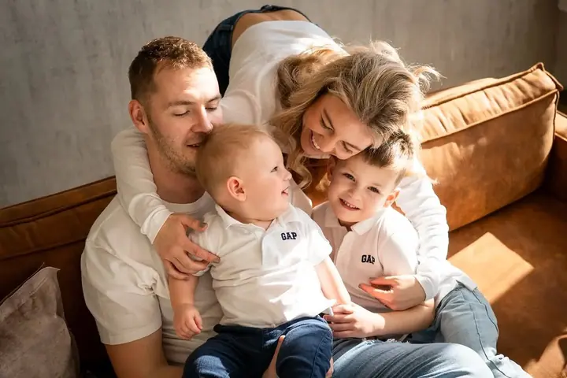
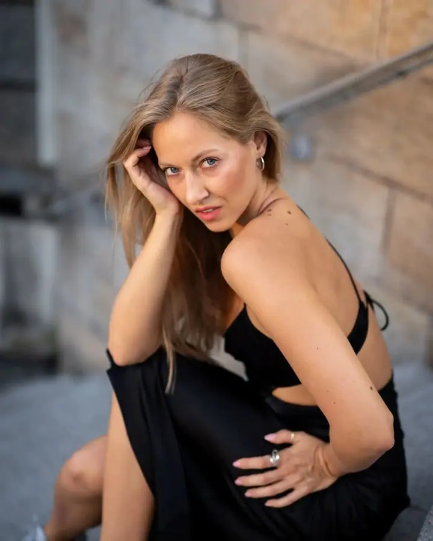

01 / 04
Svatební fotografie
Hledáte fotografa, který co nejpřirozeněji zachytí kouzlo vašeho velkého dne? Rád u toho budu a nenechám si ujít ty správné momenty.
Zeptat se na termín→





Fotky, které vyprávějí váš příběh
Zeptat se na termín →(01) Ahoj
Jmenuji se Libor Hanzlíček a v Hradci Králové a okolí fotím svatby , rodiny i portréty . Nejradši v přirozeném světle, venku v přírodě nebo ve městě. Žádné pózování a umělé úsměvy, jen vy, sami sebou, a dobrá nálada.
1 162lidí sleduje mou práci na Instagramu
304příspěvků s fotkami a příběhy
(02) Co fotím
01 / 04
Hledáte fotografa, který co nejpřirozeněji zachytí kouzlo vašeho velkého dne? Rád u toho budu a nenechám si ujít ty správné momenty.
Zeptat se na termín→02 / 04
Na dobrý portrét nemusíte být profesionální model nebo modelka. Hledám vaše nejlepší světlo, abyste se na fotkách líbili sami sobě.
Zeptat se na termín→03 / 04
Snoubenci, milenci, čerství rodiče nebo celé rodiny s dětmi. Žádné strojené focení, jen příjemná a přirozená atmosféra.
Zeptat se na termín→Dále nabízím
Bříško fotím s citem a vkusem, aby vám na tohle období zůstala krásná vzpomínka.
↗(04) Postup
Od první zprávy po hotovou galerii.
Krok 1 z 4
Pošlete mi e-mail nebo zprávu, co byste rádi fotili a kdy. Klidně se jen na něco zeptejte.
Krok 2 z 4
Společně vybereme lokaci. V okolí Hradce Králové mám několik osvědčených míst v přírodě i ve městě.
Krok 3 z 4
Žádné strojené pózy. Povídáme si, procházíme se a já fotím v přirozeném světle, dokud je dobrá nálada.
Krok 4 z 4
Fotky projdu, vyberu ty nejlepší a pečlivě je upravím, aby vám vyprávěly celý příběh.
Žádné pózování, jen vy, sami sebou.
(05) Za objektivem
Jsem učitel, cestovatel, milovník přírody a nadšený fotograf. K focení mě přivedly moje cesty po světě a ta vášeň mi vydržela i po návratu domů. Rozhodl jsem se ho proto začít brát vážně, obměnil jsem techniku a prošel několika fotografickými kurzy.
Fotografování je pro mě nekonečná cesta. Rád zkouším nové věci a snažím se sám sebe pořád někam posouvat. Nejčastěji se mi teď v hledáčku objevují portréty a jejich nejrůznější podoby, ale stejně rád fotím svatby, páry, rodiny i akce.
V okolí Hradce Králové mám několik vytipovaných lokací, které pomáhají dotvořit tu správnou atmosféru. Pokud vás některé moje fotky oslovily, nebojte se mi ozvat. Budu rád, když budu moct vyprávět i ten váš příběh.
Libor
Libor Hanzlíček · Svatební, rodinný a portrétní fotograf
Vůbec ne. Na dobrý portrét nemusíte být profesionální model ani modelka. Během focení vás povedu a hlavně se snažím, abyste byli sami sebou.
Nejčastěji venku v přirozeném světle, v přírodě nebo ve městě. Kolem Hradce Králové mám vytipované lokace, fotím ale i v Nechanicích, ve Vrchlabí a okolí. Focení malých dětí probíhá u vás doma nebo v ateliéru.
Ano. Firemní akce, kulturní akce i rodinné oslavy rád zdokumentuji formou reportáže.
Ano, nabízím dárkový poukaz. Napište mi a domluvíme se, jaké focení by měl obsahovat.
(07) Kontakt
Napište pár vět o tom, co si představujete, a termín, který se vám hodí.
hanzlicek.libor@gmail.com